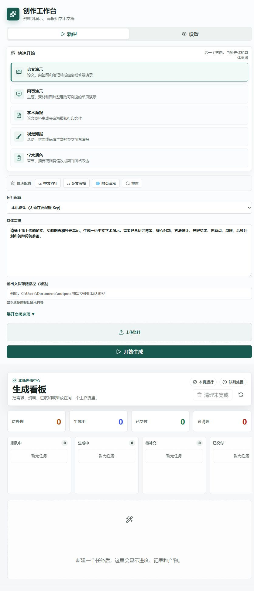
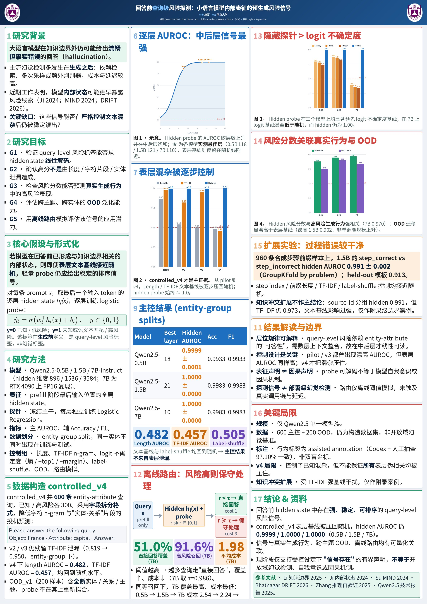

选择创作方向
从论文演示、学术润色、网页演示、学术海报、视觉海报中快速开始。
工作流
这个项目的价值不只是做一个表单，而是把多种专业创作 Skill 接口统一成一个可操作、可追踪、可复用的本地创作流程。
从论文演示、学术润色、网页演示、学术海报、视觉海报中快速开始。
论文、实验图、章节草稿、主题素材和参考风格都可以进入同一个任务。
任务状态、运行记录和异常信息集中显示，避免在多个脚本窗口里来回找结果。
生成后的 PPT、PDF、HTML、图片和 Markdown 可以下载，也可以继续追加 AI 修改要求。
操作台预览
截图来自本地运行的 React 工作台：左侧创建任务，右侧任务看板，底部显示运行记录和生成产物。

Skill 接口
AI Workbench 把多个专业 Skill 的输入、执行和产物收敛到同一个产品界面里，适合持续扩展更多创作能力。
输入论文 PDF、实验图、阅读笔记或章节材料。
输出中文学术 PPTX、检查报告和图像资源清单。
输入摘要、章节、回复信或论文段落。
输出润色稿、修改说明和可追踪的文本版本。
输入论文材料、图表、格式说明和参考风格。
输出会议海报 HTML、PDF 和海报配置文件。
输入主题、受众、时长、素材和图片。
输出横向翻页的网页 PPT 和配套图片资源。
输入主题、比例、风格偏好和参考图。
输出英文海报方案、图片提示词和视觉产物。
真实产物
下面的学术海报来自项目实际生成结果，用来展示工作台不只管理任务，也能沉淀可展示、可打印、可继续修改的专业产物。

工作台不是把文件上传到一个陌生的在线服务。它在你的电脑上运行，模型配置、上传材料和生成结果都由本地项目管理。